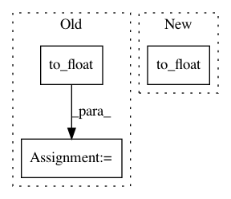

477c6ffca3eeccac0402d3530886e16cb5a6d7f7,txtgen/losses/mle_losses.py,,average_sequence_sparse_softmax_cross_entropy,#Any#Any#Any#Any#Any#,152
Before Change
losses = tf.nn.sparse_softmax_cross_entropy_with_logits(
labels=labels, logits=logits)
losses = _mask_sequences(losses, sequence_length, time_major)
seq_length_sum = tf.to_float(tf.reduce_sum(sequence_length))
loss = tf.reduce_sum(losses) / seq_length_sum
return loss
After Change
losses = tf.nn.sparse_softmax_cross_entropy_with_logits(
labels=labels, logits=logits)
losses = _mask_sequences(losses, sequence_length, time_major)
loss = tf.reduce_sum(losses) / tf.to_float(tf.shape(labels)[0])
return loss
In pattern: SUPERPATTERN
Frequency: 3
Non-data size: 3
Instances
Project Name: asyml/texar
Commit Name: 477c6ffca3eeccac0402d3530886e16cb5a6d7f7
Time: 2017-12-03
Author: zhiting.hu@petuum.com
File Name: txtgen/losses/mle_losses.py
Class Name:
Method Name: average_sequence_sparse_softmax_cross_entropy
Project Name: NifTK/NiftyNet
Commit Name: 0c63b9dcd7ee3da39c74379a01d16e3a360d3506
Time: 2017-10-26
Author: wenqi.li@ucl.ac.uk
File Name: niftynet/layer/resampler.py
Class Name: ResamplerLayer
Method Name: _resample_inv_dst_weighting
Project Name: asyml/texar
Commit Name: 477c6ffca3eeccac0402d3530886e16cb5a6d7f7
Time: 2017-12-03
Author: zhiting.hu@petuum.com
File Name: txtgen/losses/mle_losses.py
Class Name:
Method Name: average_sequence_softmax_cross_entropy